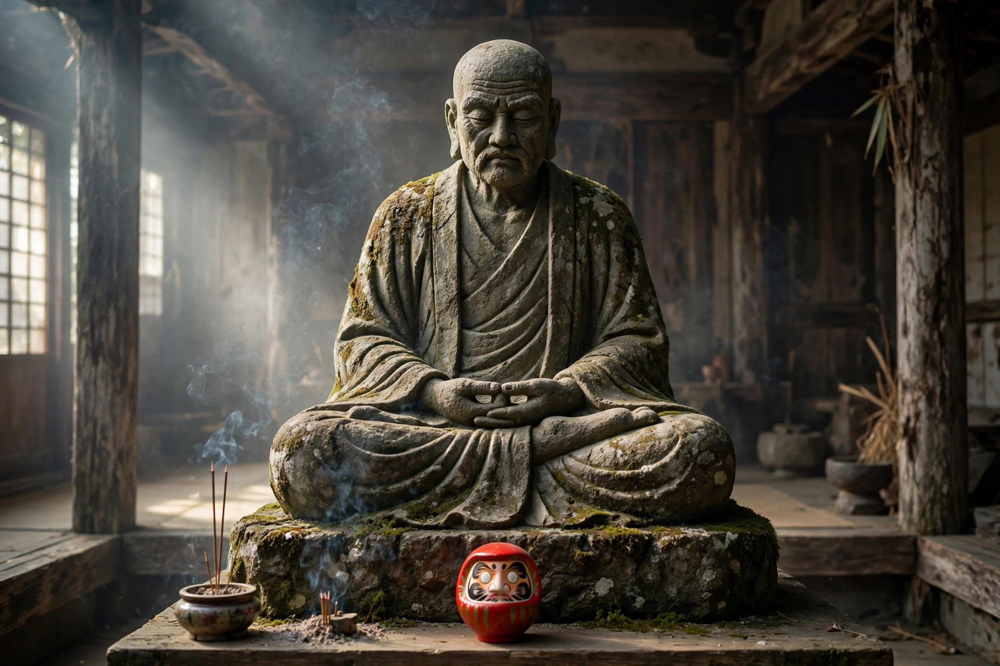

達磨大師とは ― 禅とだるまの由来を知る

この記事の結論
達磨大師（菩提達磨）は、5〜6世紀にインドから中国へ渡り、禅の教えを伝えた僧で、中国禅宗の初祖とされます。少林寺で壁に向かい9年間座禅した「面壁九年」の伝説で知られ、その座禅姿が日本のだるま人形のモデルになりました。赤い衣は僧衣の色であり、大きな目と髭のある顔は達磨像の表現を受け継いだものです。
インドから中国へ ― 禅を伝えた僧
達磨大師は南インドの出身と伝えられる僧侶で、船で中国へ渡り、やがて嵩山の少林寺に滞在しました。経典の言葉に頼らず、座禅によって自らの心を見つめる禅の修行を伝えた人物として、中国禅宗の開祖（初祖）に位置づけられています。生涯の細部には史料と伝説が入り混じりますが、「禅を東アジアへ広める起点となった僧」という評価は広く共有されています。
面壁九年 ― 倒れない姿勢の原点
最も有名な伝説が、少林寺で壁に向かって9年間座り続けたという「面壁九年」です。眠気に襲われないよう自らまぶたを切り取った、洞窟で修行を続けた、といった逸話も伝わります。真偽のほどは別として、「どんなことがあっても動じず、やり続ける姿勢」の象徴として語り継がれてきました。日本のだるま人形が「転んでも起き上がる」縁起物となったのは、この忍耐のイメージと重なるからです。
なぜ赤く、なぜあの顔なのか
- 赤い衣：達磨像では赤い僧衣姿で描かれてきました。日本では赤は魔除けの色でもあり、だるまの定番色になりました
- 大きな目と髭：インド出身の僧らしい風貌として描かれた達磨像の表現が、人形にも受け継がれました。高崎だるまでは眉＝鶴、髭＝亀の縁起の意匠に発展しています（高崎だるまの記事参照）
- 手足がない丸い形：座禅を組む姿を簡略化したもの。起き上がり小法師の形と結びつき、今のだるまの形になりました
絵画から人形へ ― 日本での広まり
日本では禅宗の広まりとともに達磨像が描かれるようになり、江戸時代には張り子の起き上がり人形と結びついて、願掛けのだるまが各地に広がりました。天明の飢饉をきっかけに高崎で産地が育った経緯は、だるまが「信仰の対象」から「人々の願いを託す道具」へ近づいていった表れでもあります。現代のだるまは、禅の精神を背景に持ちながら、目標達成のパートナーとして日常に溶け込んでいます。
よくある質問
Q. 達磨大師は実在した人物ですか？
A. 菩提達磨は5〜6世紀にインドから中国へ渡り禅を伝えた僧として、史料と伝承の両方に登場します。生涯には多くの伝説が伴い、史実と伝説が入り混じって語り継がれてきました。
Q. なぜだるまは赤い衣で描かれるのですか？
A. 達磨大師が赤い僧衣をまとった姿で描かれてきたことに由来します。日本では赤は魔除けの色ともされ、縁起物としてのだるまの定番色になりました。
Q. なぜだるまの目は白く描かれていないのですか？
A. 願掛けのだるまでは、購入者が願いを込めて自分で目を入れる習慣が広まったためです。絵画の達磨像には目が描かれていますが、人形は「目入れ」の体験を残す形になりました。
Q. 「面壁九年」とは何ですか？
A. 達磨大師が少林寺で壁に向かって9年間座禅を続けたという伝説です。揺るがない修行の姿勢が、倒れても起き上がるだるまの「忍耐」のイメージの源になっています。